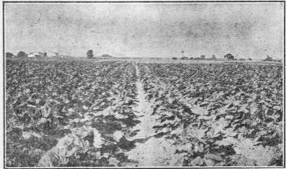

Rhubarb (Rheum Rhaponticum)
Description
This section is from the book "Vegetable Gardening", by Ralph L. Watts. Also available from Amazon: Vegetable Gardening.
Rhubarb (Rheum Rhaponticum)
583. History And Importance
Rhubarb is indigenous to eastern Asia. It belongs to the buckwheat family, Polygonaceae, and is a highly popular herbaceous perennial vegetable, being grown in nearly all home gardens. It constitutes an important crop on many commercial plantations. The succulent stems are used for sauce and pies.
584. Climatic Requirements
The roots are hardy. Although fall mulching is often practiced, it is unnecessary so far as root protection is concerned, whatever value it may have for other purposes.
585. Soil
Deep, rich, sandy loams provide ideal conditions for rhubarb which, however, may be grown successfully on all types of soil put in the proper condition. The large leaves and succulent stems require an enormous amount of soil moisture, so that irrigation is especially valuable for this crop. The earliest marketings command the best prices. Warm soils sloping to the south are desirable when earliness is the chief consideration.
586. Propagation
The plants are readily propagated from seed sown under glass or in the open, but as only a small percentage of the plants produced in this way are true to type, the system should not be generally practiced. Root division is the method ordinarily employed. A piece of root containing a strong eye will grow and under favorable conditions produce a good plant in one season. Gardeners who force the crop in hotbeds or special buildings often lift the roots from old plantations in the fall, remove a sufficient number of eyes to start the new plantation the following spring and force the large, fleshy roots during the winter.
Fig. 98. A FIELD OF RHUBARB.
587. Planting
Fall planting is sometimes practiced, but spring planting is preferred. Early planting is important, because the plants need the entire growing season for their full development. The most common distances for planting are 3 x 4 or 4 x 4 feet apart. The roots or eyes are covered with several inches of soil. Victoria and Linnaeus are the two most popular varieties. The former is somewhat the more vigorous. Linnaeus (sometimes called Strawberry) produces beautiful pink stalks of the finest quality. Figure 98 shows a field of this variety in prime condition.
588. Fertilizing
In the fertilizing of rhubarb the grower should consider, (1) that the plant luxuriates in soils abounding in vegetable matter, (2) that large stalks count for good prices, (3) that the early pullings are in most demand, (4) that the crop of any given year depends largely upon the care of the plants the preceding year.
Stable manure is especially valuable, because it supplies humus, conserves moisture and furnishes plant food. Some of the intensive and most successful growers use 25 or more tons to the acre. Manure is probably most effective when applied in the fall, although spring dressings are often made.
The commercial fertilizer should contain 4 to 6 per cent of nitrogen and 8 to 10 per cent each of the mineral elements. About 1,000 pounds an acre should be incorporated with the soil at the first cultivation in the early spring. Nitrate of soda is of great value when used at intervals throughout the growing season. Its use at the close of the harvesting season is advocated to develop strong roots for the next year's crop. The same principle is involved as in the fertilizing of asparagus. With proper care plantations will produce for many years. A mistake is made, however, by retaining them after the stalks become materially smaller. It is doubtful if the best profits can be realized in plantings more than five years of age.
589. Cultivation
Thorough tillage throughout the season is highly important. Enormous amounts of water are used by the large leaves and succulent stems, and conservation of moisture is urgent. At the first operation in the spring the mulch of manure is worked into the soil. Subsequent tillage should be frequent, but not too deep. Some hand hoeing is generally necessary to keep the fields free from weeds. The seed stalks which generally appear on a small percentage of the plants should be broken off.
590. Marketing
Harvesting begins as soon as the stalks have attained a length sufficient to satisfy the markets. The largest stalks are pulled, no attention being paid to the smaller ones, although the small stems are more tender for midsummer use. It is not customary to make heavy pullings until the third year from planting. Harvesting in any year should not continue until the plants are largely exhausted. Rhubarb is essentially a late spring and early summer crop. Ordinarily the season of marketing lasts about two months, May and June being the months when the crop is consumed most largely. From two to eight stalks are tied in a bunch. Red or blue tape adds considerably to the attractiveness of the product.
Continue to:
Tags
plants, crops, gardening, cultivated, harvesting, food ,greenhouses, fertiliser, vegitables